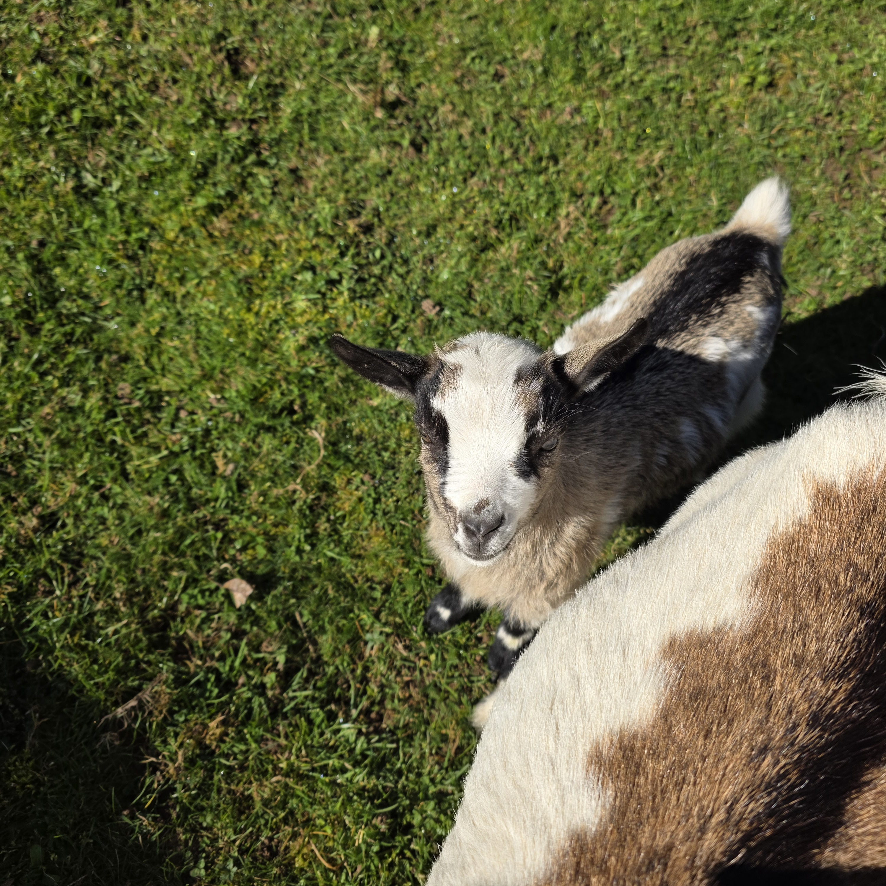

Informations générales
Race : Chèvre naine miniature
Sexe : Femelle
Parents : Câlimé (père) et Aspro (mère)
Famille : Demi-sœur de Réglisse
Une chèvre bien entourée
Nutz fait partie d’une belle lignée de la ferme, étant la fille de Câlimé et d’Aspro. Elle est également la demi-sœur de Réglisse, avec qui elle partage une partie de son histoire familiale.
Caractère
Nutz est une chèvre vive et sociable. Elle aime la compagnie et trouve facilement sa place au sein du groupe, créant des liens forts avec les autres animaux.
Complicité avec Chamallow 🤍
Parmi toutes ses relations, Nutz entretient une belle amitié avec Chamallow. Elles passent beaucoup de temps ensemble, partageant jeux et moments calmes, preuve que les liens dans la ferme vont bien au-delà des simples liens de famille.
La petite touche gourmande 😄
Avec un prénom comme Nutz, difficile de ne pas penser à une petite douceur sucrée… Encore une fois, la ferme ne manque pas d’inspiration côté gourmandise !


